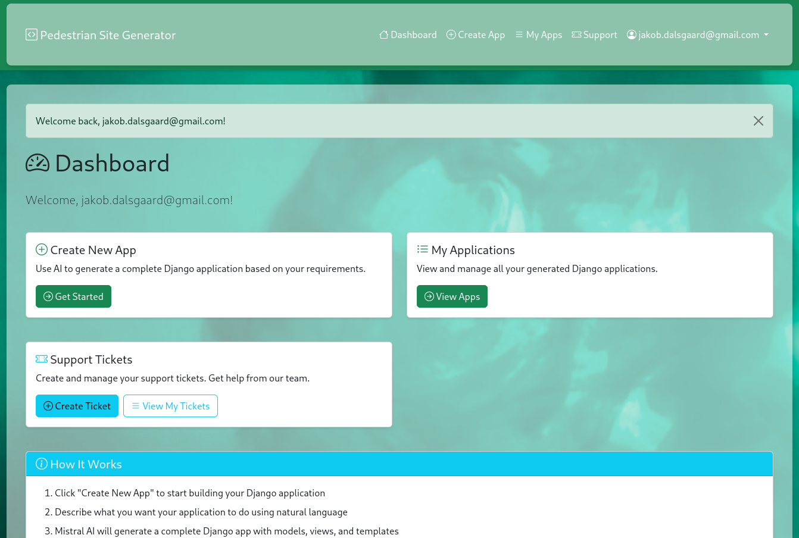

Pedestrian Site
This is a short introduction of the Mistral AI powered Django application builder available at pedestrian.site. This service aims at building a fully functional Django application given a short description of the requirements. Using the service is fairly simple, head to the site and login or register:
You need to register with a valid email address as you will be sent a validation email; once you have validated your email, you should be able to login and create applications. You can select 'Create New App', 'My Applications' or 'Support Tickets' -- as can be seen here:

Now, when creating an application, you'll be assigned a container in which Mistral attempts to build the application; the web application running inside this container will be accessible online through a link like this one: 9d157f4a-bdee-4f7d-8971-3f28e98ba234.pedestrian.site/ -- this is the link you see on the details page next to the application name.

Even if Mistral believes the application generation failed, you might actually have something running. You may continue the conversation with Mistral at the bottom of the page.
Right now the tool does not have integration to any revision system; however, you may download the full application by using the 'Download App' button. Also, there is no email functionality easily available -- it might come, it might not. You should also be aware that the container assigned to your application is limited in terms of CPU, memory and disk and it will be paused after 2 weeks -- this'll give me some time to figure out next steps for this service.